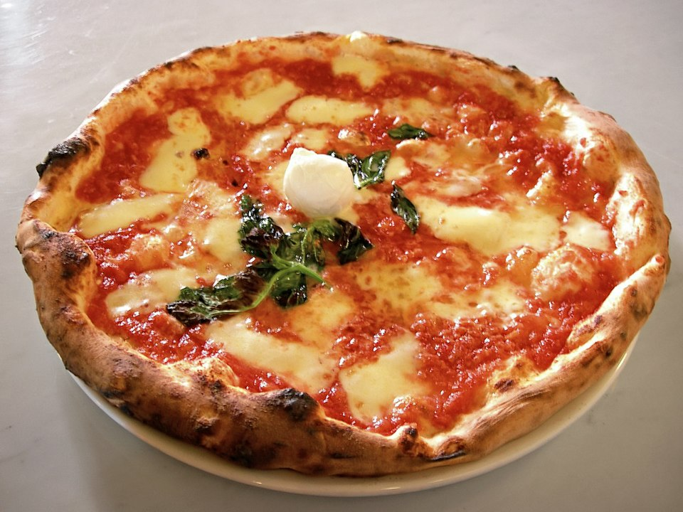

Pizza

Descripción
La pizza casera es una excelente manera de disfrutar de este clásico italiano con ingredientes frescos y a tu gusto. La masa es fácil de hacer y puedes agregar los toppings que prefieras.
Ideal para cenas en familia o con amigos, ¡y mucho más rica que la pizza congelada!
Ingredientes
Ingredientes
- 2 tazas de harina de trigo
- 1 cucharadita de sal
- 1 cucharadita de levadura seca
- 3/4 taza de agua tibia
- 2 cucharadas de aceite de oliva
- 1/2 taza de salsa de tomate para pizza
- 200 g de queso mozzarella rallado
- Toppings opcionales: jamón, pepperoni, champiñones, aceitunas, pimientos, etc.
Pasos
- En un bol, mezcla la harina, sal y levadura. Agrega el agua y el aceite. Amasa hasta formar una masa suave.
- Deja reposar la masa durante 1 hora en un lugar cálido, hasta que doble su tamaño.
- Precalienta el horno a 220 °C.
- Estira la masa sobre una bandeja con papel para hornear o ligeramente enharinada.
- Cubre con la salsa de tomate, queso y los toppings elegidos.
- Hornea durante 12–15 minutos o hasta que el borde esté dorado y el queso derretido.
- Sirve caliente y disfruta.
Inicio